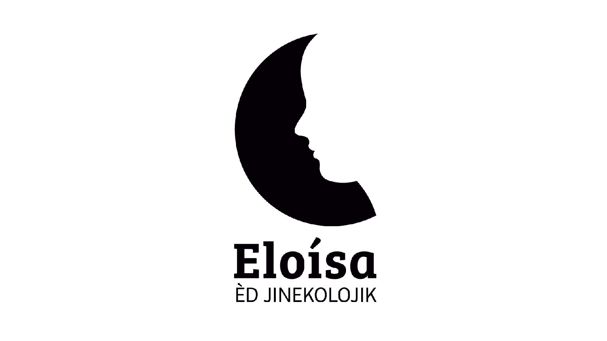
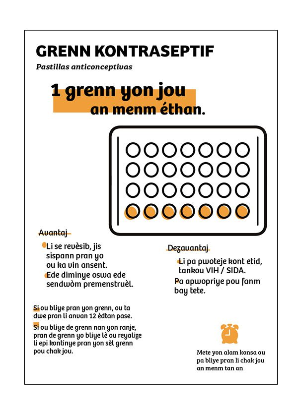
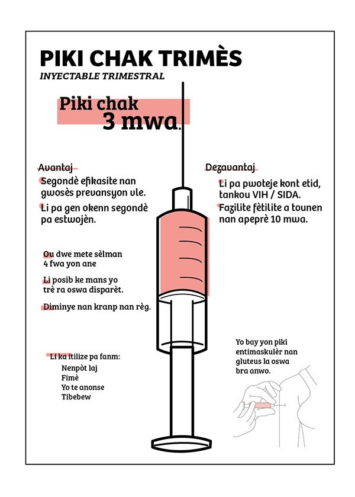
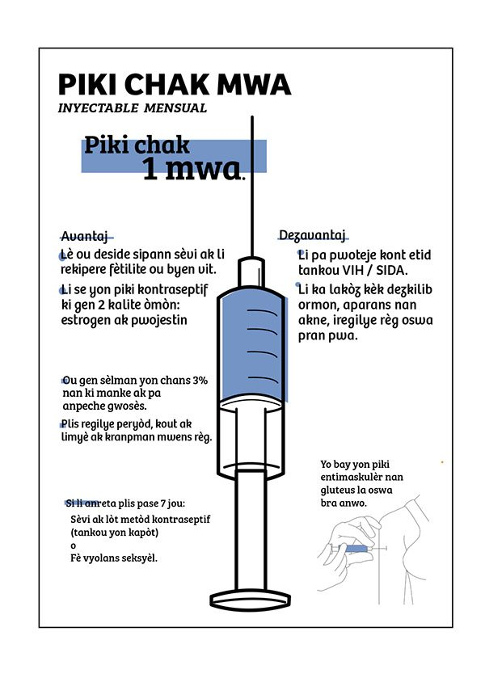
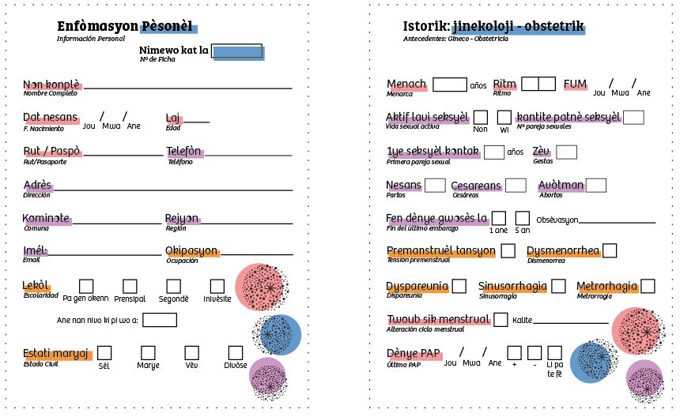
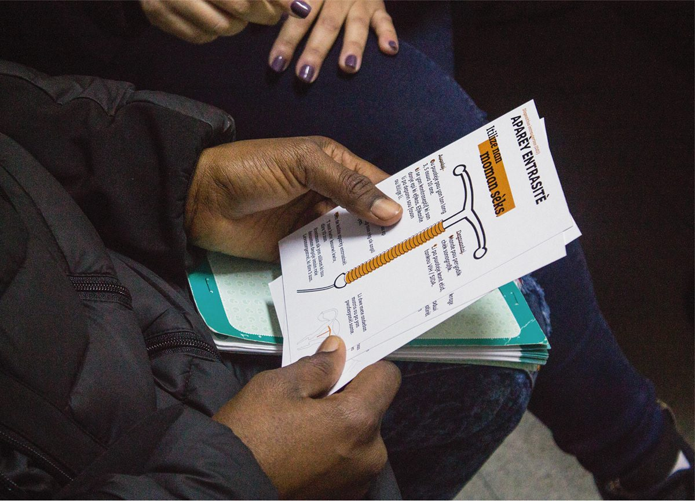
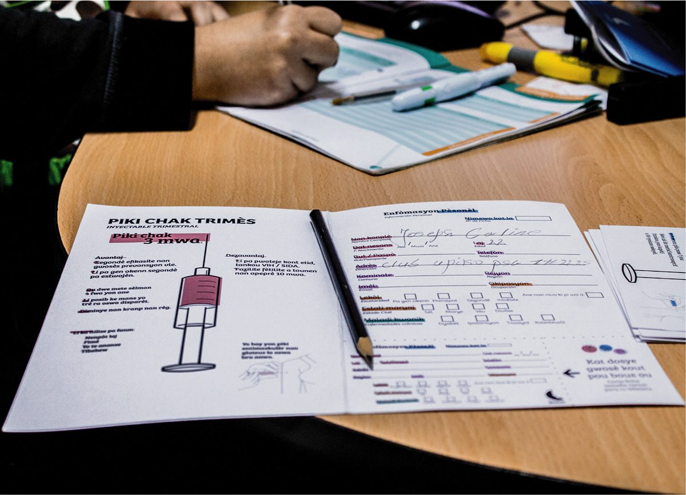
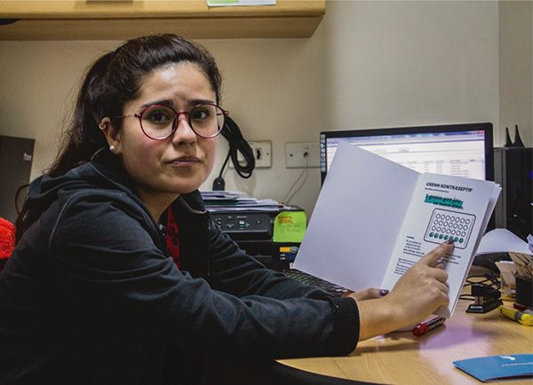

Eloísa
Sistema de traducción español-créole para mujeres haitianas en el CESFAM: acceso a salud sexual y métodos anticonceptivos cuando el idioma es la primera barrera.

Eloísa, o Èd Jinekolojik, es un sistema de traducción español-créole haitiano para la atención en salud de la población haitiana en Chile. Está pensado específicamente para mujeres y para el momento en que la barrera del idioma decide qué información recibe una paciente sobre su propia salud sexual.
El problema
En una consulta de salud sexual, no entender el idioma no significa entender menos: significa quedarse fuera de la decisión. Una mujer que no puede preguntar cómo se toma un anticonceptivo, qué efectos tiene o cada cuánto se repite, no está eligiendo un método, está recibiendo uno. Eso es lo que el proyecto intenta corregir, y por eso el material está en créole con el español en segundo plano, no al revés.



Cómo está resuelto
Cada método anticonceptivo tiene su ficha, y todas siguen la misma estructura: el nombre en créole con la traducción al español bajo el título, la frecuencia de uso destacada, y dos columnas enfrentadas con ventajas y desventajas. La ilustración es literal a propósito: el blíster con las pastillas marcadas, la jeringa, el gesto de la inyección. Cuando el texto falla, el dibujo todavía funciona.


Junto a las fichas de métodos hay formularios de registro traducidos, que el profesional completa con la paciente. No son un folleto para llevarse: son la herramienta de la consulta misma. Eso obliga a que el material aguante el uso sobre el escritorio, con lápiz encima, y no solo la lectura.




Probado en consulta
El material no se quedó en la maqueta: se usó en atenciones reales, con la profesional explicando y la paciente siguiendo la ficha. Ahí se ve si funciona o no. Una ficha que hay que sostener con las dos manos, o que se dobla justo donde está el dato importante, falla en la consulta aunque se vea bien impresa.